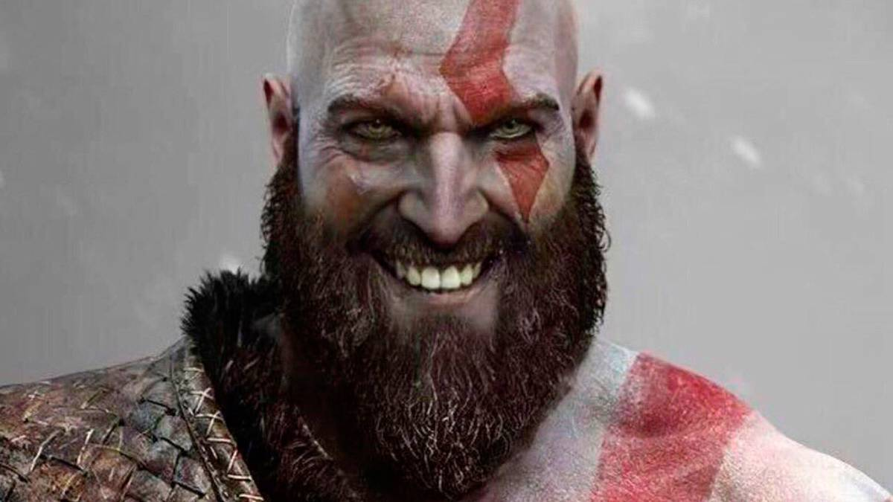
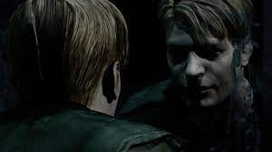
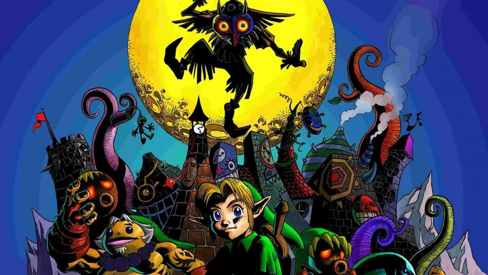
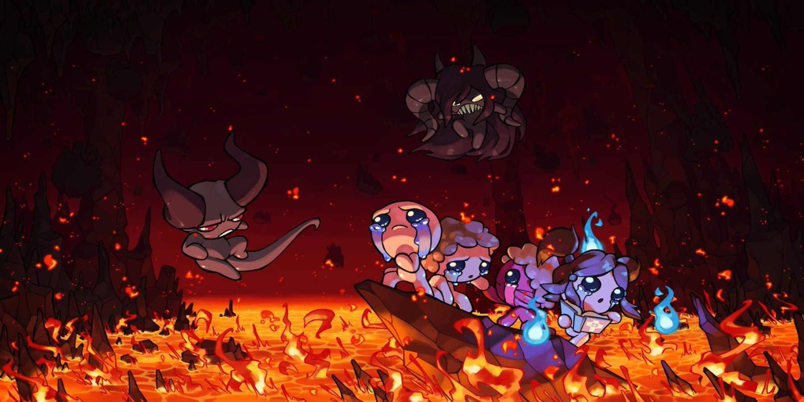

Bienvenida!
Autor: Angel Fernando Madrid Garza
La amplia gama de juegos que posee nuestro catalogo
es sin duda la de generos mas aleatorios que se nos pudo ocurrir aquí en FernoPagina,
se trata mas que nada de un par de recomendaciones que hemos completado de pies a cabeza
y sin duda pueden ofrecerte horas de diversion en tus ratos libres, siempre y cuando
dispongas de estos claro esta.
Para la primera versión de FernoPagina hemos procurado cubrir un juego por cada genero
(genero ya jugado, aquí en FernoPagina no disponemos de tiempo para explorar todos y cada
uno de los generos gracias por entender pibe).
Las secciones a continuación son:
Acción
Sin duda una de las categorías mas explotadas en la industria, pues su capacidad para amalgamarse con cualquier guion que plantee un poco de adrenalina en su trama
puede venderse asi mismo como una obra llamativa y así hacerse notar, ya que este genero maneja la violencia y conductas un poco subidas de tono para darle vida a su gameplay; Por ejemplo,
el genero hack and slash demuestra acción y violencia a caudales, las cuales son capaces de hipnotizar
al espectador promedio con su gala de lucesitas y disparos (Como ejemplos bastante populares tenemos a Metal gear rising, Bayonetta o Devil may cry).
Una vez explicado ligeramente el genero podemos abrir paso a nuestra recomendación, tratandose en esta ocasion de la franquicia God of war
arriesgandonos a llegar a lo "generico" pues es quizá una de las franquicias mas conocidas del genero, podemos asegurar que toda su gama de juegos es una joya de acción sin sentido que puede alegrarte
el día con nada mas que avanzar por las distintas zonas asesinando a toda la gama de mounstruos mitologicos que a los dioses tanto les sobran. Sus mecanicas de mejora de armas recompensan realmente
a aquellos que realmente se comprometen con la cantidad de enemigos acabados, sobre todo en su entrega mas reciente que llego para PS4, donde también puedes vestir con una variedad de armaduras y habilidades
complementarias que recompensan tu dedicacion con el juego haciendote sentir que realmente te volviste mas poderoso. Ya sea que disfrutes de la saga griega concluida en PS3 o de la nueva y mas reciente saga nordica
sin duda el catalogo de juegos en la francquicia de god of war es algo que debes saborear.

God Of War
God of War es una serie de videojuegos hack and slash creada por SCE Santa Monica Studio y distribuida por Sony Computer Entertainment.
Ver wiki del personajeSuspenso
Siendo por lo general una dupla perfecta del genero de horror, el genero de suspenso provoca tensión en mayor o menor medida a los jugadores, haciendoles dudar en todo momento de lo que pueda
pasar durante su aventura.
Por lo general como ya mencionamos el suspenso suele ser acompañado de terror hasta los huesos, así que fue dificil escoger un titulo que se enfoque mas que nada en el suspenso, siendo la recomendación de este caso
Little Nightmares, un juego tipo puzzle con una historia bizarra y de tintes macabros cuyo arte visual destaca por lo bien diseñado que esta. Puesto que no he jugado la secuela no puedo decir mucho de esta, pero sin duda
parecen ser un par de joyas que ademas fueron muy buen recibidas por los fanaticos.
En la wiki de la saga de Little Nightmares, te adentraras en el mundo de personajes como lo son Six, Mono, el Niño fugitivo o los monstruos que buscan atraparlos en todo momento. Serás capaz de observar de cerca la información sobre las localizaciones, criaturas, objetos, ítems y curiosidades que se encuentran en Little Nightmares y sus comics. Escogimos la caratula del 2 por que esta mas perrona.

Little Nightmares
Videojuego de rompecabezas y horror de supervivencia desarrollado por Tarsier Studios y publicado por Bandai Namco Entertainment.
Ver wiki del personajeTerror
Se trata de un genero muy particular en los videojuegos, pues no a todos les da por ponerse los pelos de punta en vez de divertirse
robando autos y atropellando ancianitas despistadas, el genero, personalmente, puede llevarte a despertar tus sentidos mas humanos, la sensacion del sudor frío y la
extraña posición en la que se encuentra el protagonista, dejan en esencia, un sabor de boca agridulce, pues mientras mas cercano te vuelves al protagonista y a los
aterradores acontecimientos que vive sientes un verdadero temor, poniendote en su lugar y preguntandote si su humanidad es muy diferente a la que llevas dentro.
Es aqui cuando llegamos a Silent Hill, franquicia de videojuegos que fue victima de polemicas y fuertes criticas a sus juegos posteriores a la disolución del equipo de
desarrollo original despues de la cuarta entrega, pero el titulo particularmente que vamos a analizar es Silent Hill 2, considerado como el mejor de la franquicia
encarna las vivencias de James Sunderland, hombre que perdió a su esposa por una grave enfermedad hace un par de años, misma que le entrega una carta diciendo que le espera
en 'su lugar especial' el pueblo maldito de silent hill, pero, ¿esta realmente viva la esposa de James... o estara descendiendo a la locura?
Las mecanicas de supervivencia y la estetica amenazante tanto de escenarios como enemigos te ponen nervioso y te orillan a cuidar bien tus municiones y recursos, tus decisiones
deben ser pensadas con buen criterio pues de estas desencadenara un final distinto en el juego, contando con una pequeña pero poderosa gama de armas y un significado psicologico
para cada horror que en el pueblo reside Silent Hill es una gran elección a la hora de querer asustarse un poco

Silent Hill 2
Videojuego japonés del género de videojuegos de terror y acción-aventura, desarrollado por Team Silent y publicado por Konami.
Ver wiki del personajeRPG
Un videojuego de rol o juego de rol por computadora/ordenador, también llamado por simplificación juego de rol (JDR), o referido con la sigla inglesa RPG (role-playing game)
se trata de un juego que lleva a los participantes a asumir un rol o papel, interpretando a un personaje. De este modo los jugadores se desenvuelven en historias ficticias que se van construyendo a partir de las decisiones que toman los distintos participantes.
Estas caracteristicas y las caracteristicas de recolección de experiencia, mejora de armas y atributos, ademas de una amplia gama de armaduras, enemigos y piezas musicales magnificas, no solo son las caracteristicas de un RPG tradicional, si no que son las cualidades de
las que Dark Souls presume y demuestra, brillando cegadoramente para todos los jugadores que disfruten de un desafío RPG, pues la personalización y desarrollo de tu personaje evoluciona a tu
estilo mientras cumples con tu rol como protagonista en la historia.
Particularmente no hablamos de un titulo en general, volvemos a recomendar una franquicia completa pues, los juegos de tipo Souls cumplen con estas caracteristicas ya mencionadas y cada uno por su
cuenta despliega una serie de escenarios, enemigos y armas de las que puedes hacer exploración, pues mas vale que lo hagas ya que, memorizar patrones enemigos, volverse mas fuerte en atributos especificos e interactuar con todo lo que puedas es lo mas conveniente para acabar
una aventura de tipo souls.

Dark Souls
La serie Souls es una serie de videojuegos pertenecientes al género de rol y de acción, creados y desarrollados por la empresa From Software.
Ver CategoríasAventura
Para juegos de aventura siempre he sido muy de calabozos y dragones, ambientaciones fantasiosas y con un mundo lleno de su propia logica, sus propias reglas, personajes, villanos y banda sonora,
una vez mas describo con antelación las cualidades en las que brilla la franquicia Zelda Majora's Mask, pues mas que un juego de mi
infancia lo considero una joya en todos sus sentidos. Si bien no fue tan exitoso como su predecesor Zelda Ocarina Of Time aún así no deja atrás las buenas mecanicas de los juegos en 3D de la franquicia, si no que va mas
alla e introduce nuevas mecanicas, da un aire nuevo a los personajes y se atreve a darle un tono mas sombrío a su trama, la cual muchos consideran es la mas oscura de la franquicia.
Link el protagonista, vuelve para esta secuela buscando a una vieja amiga, adentrandose por error en un bosque que conducía a una realidad alterna de todo lo que conocía, link tiene que verselas con skull kid, el villano de turno
el cual es poseedor de una mascara maldita con la cual pretende destruir todo el reino de "termina" en un plazo de tres días, Link y su nueva compañera taya, y gracias a la ocarina del tiempo que entrego la princesa zelda, link y taya
deberan despertar a skull kid del trance en el que lo tiene la mascara y en el proceso ayudar a los ciudadanos de termina con la crisis que afrontan frente a la destruccion inminente.

Zelda Majora's Mask
Videojuego de acción-aventura de la serie The Legend of Zelda desarrollado por la división Entertainment Analysis and Development de Nintendo para la videoconsola Nintendo 64.
Ver CategoríasMultijugador Local
Siendo al principio nada mas que un juego de tipo rougelike de flash, the binding of isaac desde su salto a steam y sus multiples DLC's (particularmente su ultimo dlc Repentance)
lo considero un excelente juego multijugador, pues jugarlo solo durante tantos años dejaba esa sensación de que podía aprovecharse mejor el arbol de limones que es the binding of
isaac.
Con una historia tetrica y de simbolismos religiosos, plagada de items, recolectables y baratijas además de una excelente banda sonora isaac puede ser un juego estresante, pues sus niveles
son completamente aleatorios y conforme se va avanzando por ellos la dificultad continuara avanzando como si no hubiera un mañana, pero como el perfeccionista y a la vez necio que soy recomiendo a todos
los aficionados a los desafios que traigan a un amigo e intenten obtener cada final, cada personaje y cada marca sangrienta que representa tu logro en el juego, sumamente divertido y con partidas que pueden
durar de 20 minutos a una hora completa isaac es una experiencia totalmente adictiva, además de que es probable que si eres observador te obsesiones con la historia de fondo que narra el juego, y descubrir
como el amor de una madre como el amor de dios, castigan con mano dura a la inocencia.

The binding of Isaac
The Binding of Isaac es un juego de acción RPG con fuertes elementos de tipo Roguelike, en el cual los niveles son generados aleatoriamente.
Ver CategoríasMultijugador Online
Imposible hablar de multijugadores online sin mencionar a minecraft, ya un Hito en la cultura popular pues desde su lanzamiento y con cada nueva actualizacion me ha dado a mi y a muchos el placer de
disfrutar tardes de supervivencia con amigos, desetando toda clase de vivencias desde la forma mas mundana, un mundo de cubitos.
El mundo se ha generado y a tu alrededor todo es desconocido, no importa cuántas veces hayas jugado, si creaste un nuevo mundo, no sabes dónde estás, es hora de prepararse porque durante la noche todo se vuelve peligroso.
Comienzas por talar un árbol y construir herramientas y el refugio que te ayudarán a sobrevivir esa larga primera noche en la que tus recursos son escasos y apenas puedes ubicar el lugar donde te encuentras; tal vez no recuerdes cuántos mundos has creado, cuántos proyectos has abandonado o cuántas veces derrotaste al Ender Dragon, pero nunca olvidarás tu primera noche en Minecraft.
Al llegar la mañana aún hay algunos monstruos, en tu mano sostienes una pala de madera con stats a la mitad y tu refugio fue destruido por un creeper que te atacó por la espalda, ahora estás listo para enfrentar al elemento más abrumador del juego: las posibilidades.

Minecraft
Minecraft es un videojuego de construcción de tipo «mundo abierto» o sandbox creado originalmente por el sueco Markus Persson, y posteriormente desarrollado por Mojang Studios.
Ir a wiki